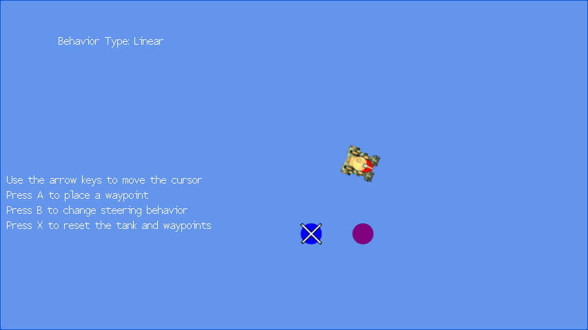

Waypoint Navigation
Ported from Microsoft's XNA 4.0 Waypoint Navigation sample.
Source for this sample on GitHub ↗

Play ▸Opens in a new tab. Move the cursor with the arrow keys and press A to place a waypoint.
About this sample
Guide a tank through waypoints in the order you place them. Linear behavior turns straight toward the next point; steering behavior turns and changes speed smoothly.
Controls
| Action | Keyboard | Gamepad |
|---|---|---|
| Move the cursor | Arrow keys | Left thumbstick |
| Place a waypoint | A | A |
| Switch movement behavior | B | B |
| Reset the tank and waypoints | X | X |
| Exit | Escape | Back |